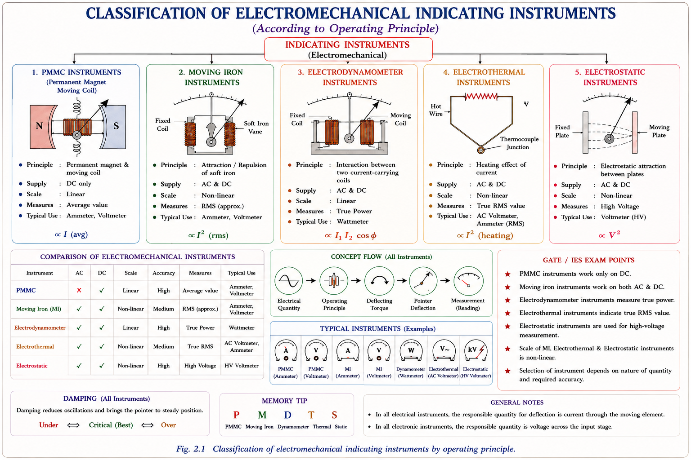
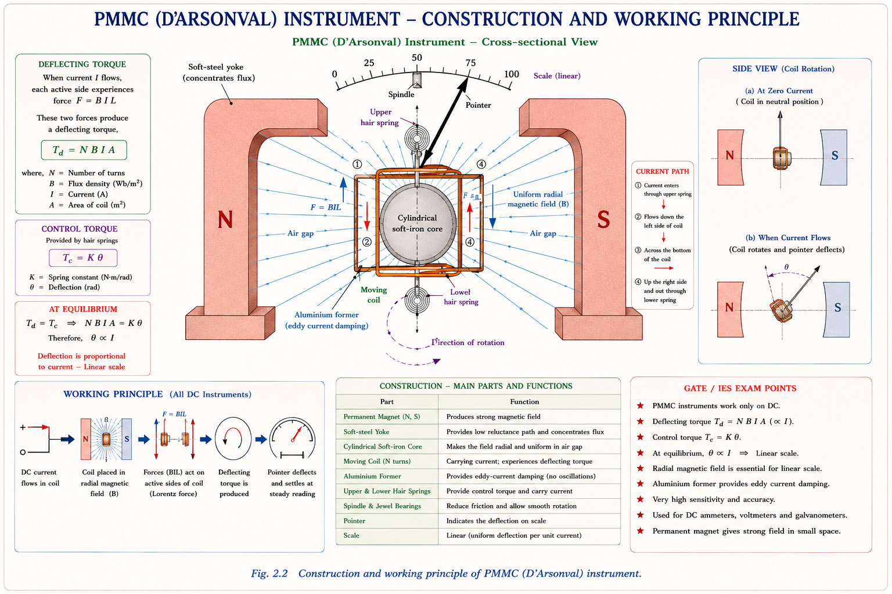
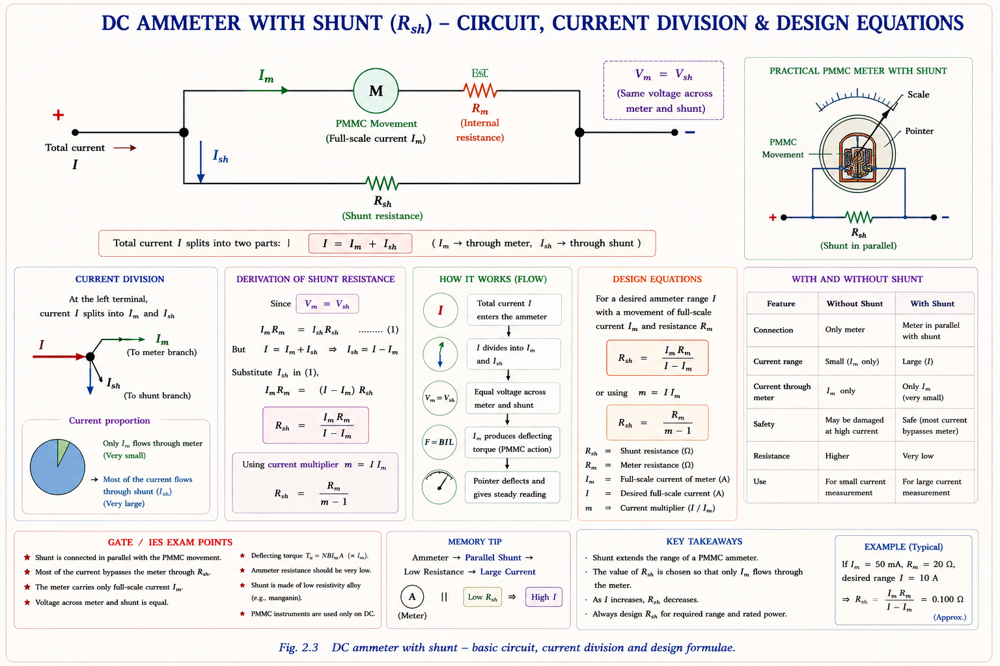
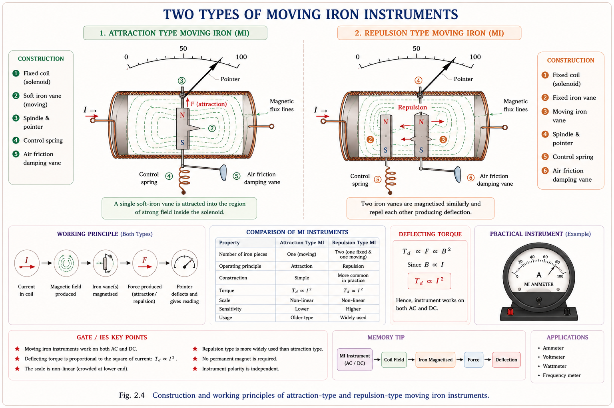
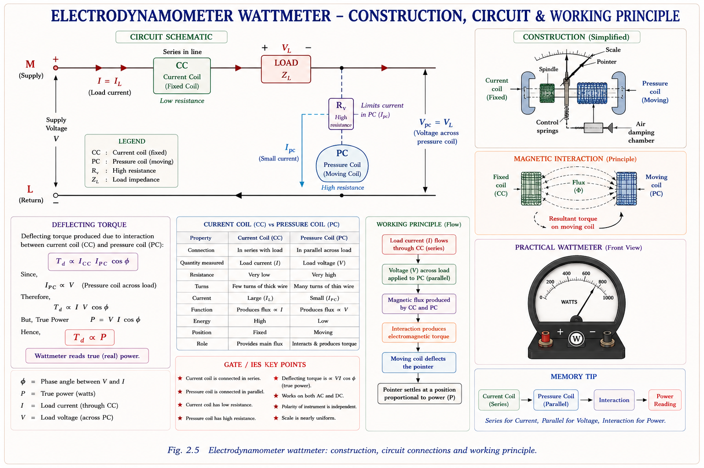
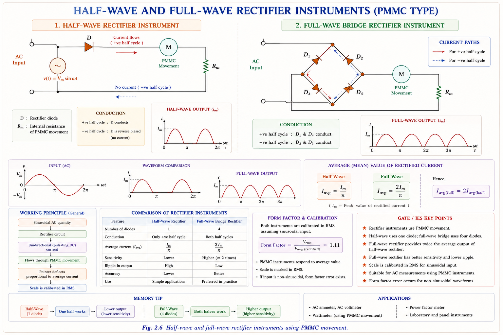

A complete, textbook-derived treatment of electromechanical indicating instruments — PMMC, Moving Iron, Electrodynamometer, and Rectifier types — with full torque derivations, scale analysis, GATE & IES concepts, and inline SVG diagrams.
Every electrical quantity — current, voltage, power, energy — is invisible to human senses. An indicating instrument converts that invisible electrical quantity into the visible angular displacement of a pointer, allowing an engineer to read the value directly on a calibrated scale. The pointer deflects proportionally to the quantity being measured, and the position it finally rests at gives a steady, readable indication.[1]
The fundamental design challenge is this: the electrical energy of the measured circuit must produce a mechanical torque that moves the pointer, but the pointer must also stop at a definite angle — not keep spinning. Three separate torque mechanisms solve this:
In spring control, the restoring torque \(T_c = K_s \theta\) where \(K_s\) is the spring constant. The instrument can be used in any position. In gravity control, \(T_c = W \cdot l \sin\theta\) — the instrument must remain vertical, and the scale is non-uniform (cramped at low end). Almost all modern instruments use spring control. (Golding & Widdis, Ch. 2)
Indicating instruments are grouped by the physical principle that generates the deflecting torque. Each class has distinct characteristics that make it suitable for specific measurement tasks.[2]

The physics underlying every indicating instrument follows a universal energy argument. When a current-carrying element moves in a magnetic field, the system does mechanical work. By equating the electrical energy supplied to the sum of stored field energy and mechanical output, the deflecting torque is obtained.[1]
Let \(L(\theta)\) be the inductance of the moving system when the pointer is at angle \(\theta\). A small rotation \(d\theta\) is produced by the current \(I\). Energy conservation gives:
This single equation governs both Moving Iron and Electrodynamometer instruments. For PMMC, the geometry changes — the field \(B\) is constant, and the torque is linear in \(I\) rather than \(I^2\).
Phosphor-bronze hairsprings (or sometimes steel springs) store potential energy as they twist. The restoring torque is proportional to the angle of deflection:
where \(K_s\) is the spring stiffness in N·m/rad. At final deflection, \(T_d = T_c\), so the steady-state pointer angle \(\theta\) depends entirely on the ratio of the deflecting torque to \(K_s\).
As springs age, their stiffness \(K_s\) decreases. Since \(\theta = T_d / K_s\), the deflection increases for the same current — the instrument reads high. This is a systematic error that requires periodic recalibration. (Bakshi, Electrical Measurements, Ch. 3)
The Permanent Magnet Moving Coil (PMMC) instrument — also called the D'Arsonval or Weston movement — is the most sensitive and accurate of all direct-acting instruments. It is the workhorse of DC measurement and forms the basis of ammeters, voltmeters, and ohmmeters.[1,2]

The coil has \(N\) turns, each of length \(\ell\) (active side) and width \(b\). The uniform radial magnetic field has flux density \(B\). When current \(I\) flows, the force on each active side is \(F = NBIL\) and the two sides produce a couple (torque). Area \(A = \ell \times b\).[1]
where \(A = \ell \cdot b\) = area of the coil. Note: \(B\), \(N\), \(A\) are all constants of construction.
At equilibrium \(T_d = T_c\):
\(\theta \propto I\) means the scale is uniform (linear) — equal divisions throughout. This is the most desirable scale property, and PMMC achieves it because the permanent magnet creates a radial field that keeps \(B\) constant regardless of coil position. Since \(\theta \propto A\) and \(\theta \propto B\), ageing of the permanent magnet (decreasing \(B\)) causes the instrument to read low. (Sawhney A.K., Ch. 6.4)
PMMC responds to the average value of current. For a sinusoidal AC current of peak value \(I_m\), the average over a full cycle is zero. The pointer cannot follow the 50 Hz reversals; inertia keeps it at zero. Therefore, a PMMC instrument reads zero when connected to AC.[2]
If a standard PMMC instrument (without a rectifier) is connected to a 230 V, 50 Hz AC supply, it will read zero — not 230 V. The pointer oscillates about zero at 100 Hz with such small amplitude that it appears stationary at zero due to mechanical inertia. At very low frequencies (≈ 1 Hz), the pointer would visibly swing between extremes.
The sensitivity of an instrument expresses how much output (deflection) it produces per unit input. For a PMMC meter, two sensitivity definitions are used:
The basic PMMC movement has a small full-scale current \(I_m\) (typically 50 μA to 20 mA) and a small internal resistance \(R_m\) (typically 1 Ω to 2 kΩ). To measure larger currents or higher voltages, the range must be extended using external resistors.[2]
A low-resistance shunt \(R_{sh}\) is connected in parallel with the meter movement. Most of the measured current bypasses the meter; only a fraction \(I_m\) flows through it.

Since \(I_m R_m = I_{sh} R_{sh}\) (parallel branches have equal voltage drop):
An ammeter must always be connected in series with the load. Its internal resistance is ideally zero. If connected in parallel, the supply voltage appears across the ammeter — the low internal resistance draws enormous current, instantly damaging the movement. A voltmeter connected in series only reads the supply voltage (full deflection) with near-zero current through the load.
A high-resistance series multiplier \(R_{se}\) is connected in series with the meter. The movement registers the proportional current \(I = V / (R_{se} + R_m)\).
When a voltmeter with low sensitivity (low \(S_V\)) is connected across a resistance, the parallel combination of voltmeter and resistance is less than the resistance alone. This reduces the voltage being measured — the meter reads a lower value than the true value. This systematic error is called the loading effect. To minimise it, always use a voltmeter with the highest available sensitivity for the circuit impedance level. (Golding & Widdis, Ch. 4)
Moving Iron instruments operate on the principle that a piece of soft iron, placed in the magnetic field of a current-carrying coil, is always attracted toward the stronger region of the field — regardless of current direction. This makes them inherently suitable for both AC and DC.[1]

The energy method gives the torque for any instrument where the deflecting torque comes from a change in inductance with angle. For MI:[1]
If the instrument is designed so that \(dL/d\theta\) is constant, then \(\theta \propto I^2\). This means the scale is non-linear (squared law) — cramped at the low end and open at the high end. The instrument reads \(I_{rms}\) on AC because the torque depends on \(I^2\), which averages to \(I_{rms}^2\) for AC.
On AC, the instantaneous torque \(T_d(t) = \frac{1}{2} i^2(t) \frac{dL}{d\theta}\) fluctuates at twice the supply frequency. The pointer cannot follow these rapid changes; it settles at the angle corresponding to the time-average torque = \(\frac{1}{2} \overline{i^2(t)} \cdot \frac{dL}{d\theta} = \frac{1}{2} I_{rms}^2 \cdot \frac{dL}{d\theta}\). The scale is therefore calibrated in RMS values. On DC, the reading is the DC value itself, which equals the RMS value for steady DC. (Golding & Widdis, Ch. 3)
The cramped low-end scale of MI instruments is undesirable. A linear scale requires \(\theta \propto I\) rather than \(\theta \propto I^2\). This is achieved by designing the iron vane geometry such that \(dL/d\theta \propto 1/\theta\):
This condition is difficult to achieve perfectly, so in practice a compromise is used — the vane shape is chosen to give a reasonably uniform scale over 80% of the scale range.
The coil of an MI instrument has inductance \(L\) and resistance \(R\). At frequency \(f\), the impedance is \(Z = \sqrt{R^2 + (2\pi f L)^2}\). For constant supply voltage, the current (and thus deflection) changes with frequency — this is the frequency error.[2]
Compensation is achieved by connecting a small capacitor in parallel with the series multiplier resistance. As frequency increases, capacitive reactance decreases, partially compensating the increased inductive reactance, keeping the current approximately constant.
The electrodynamometer replaces the permanent magnet of PMMC with a fixed coil carrying current. The interaction between the fixed coil field and the moving coil current produces deflection. Because both the field and the moving coil current can be AC, this instrument can measure true power, and its accuracy is transferable between AC and DC.[1,3]

Both coils carry currents: the fixed (current) coil carries \(I_1\) and the moving (pressure) coil carries \(I_2\). The mutual inductance between them is \(M\), which varies with angle \(\theta\).
This is why the electrodynamometer is the preferred type for power measurement — its deflection is directly proportional to true power, irrespective of waveform.
The electrodynamometer wattmeter is the primary standard for AC power measurement. Because it has no iron core, there are no hysteresis or eddy current errors. It operates on the same principle for both AC and DC, making it the most accurate type for transfer measurements. However, it is expensive, delicate, and has a weak operating torque compared to PMMC. (Fitzgerald & Kingsley, Ch. 2)
The PMMC movement, which naturally measures only DC, can be adapted for AC measurement by preceding it with a rectifier. The rectifier converts alternating current to pulsating DC; the PMMC then responds to the average value of the rectified waveform.[2]

Since PMMC reads average current but we want RMS, the scale is calibrated using the form factor \(K_f\) of the expected waveform:
Rectifier instruments are calibrated assuming a pure sinusoidal input. If the actual waveform is non-sinusoidal (e.g., clipped, distorted, or contains harmonics), the actual form factor differs from 1.11, causing a waveform error. The reading is then inaccurate. MI instruments are immune to this error because they measure true RMS. (Sawhney A.K., Ch. 8)
Choosing the right instrument type depends on the measurand (current, voltage, power), circuit nature (AC/DC), required accuracy, and environmental conditions. The table below summarises the key parameters.[1,2,3]
| Parameter | PMMC | Moving Iron | Electrodynamometer | Rectifier Type |
|---|---|---|---|---|
| Supply | DC only | AC & DC | AC & DC | AC only (with rectifier) |
| Quantity measured | Average value | RMS value | True Power (P = VIcosφ) | Avg → scaled to RMS |
| Scale | Uniform (linear) | Non-linear (I² law) | Non-linear | Uniform (if sine input) |
| Accuracy | High (class 0.1–1) | Moderate (1–2.5%) | Highest (0.1–0.5%) | Moderate (1–2%) |
| Damping | Eddy current (Al former) | Air friction | Air friction | Eddy current |
| Power consumption | Very low | Low–medium | Higher (two coil circuits) | Low |
| Effect of stray field | Moderate (shielded by PM) | High (soft iron attracts) | Low (uniform field) | Moderate |
| Waveform error | N/A (DC) | None (true RMS) | None | Yes (assumes sine) |
| Frequency range | DC | Up to 125 Hz | Up to 2.5 kHz | Up to 20 kHz |
| Primary application | DC lab instruments, galvanometers | Panel meters, switchboard | Power & energy, transfer standards | Communication, audio frequencies |
The following represent the concepts and question patterns most frequently appearing in GATE EE and IES (E&T) examinations. Markers indicate probability of appearance.
A PMMC instrument connected to a sinusoidal AC source reads the average value of the current, which is zero over a complete cycle. Due to mechanical inertia, the pointer rests at zero and does not vibrate visibly at 50 Hz. If half-wave rectification is used, the meter reads \(I_m/\pi\). If full-wave, it reads \(2I_m/\pi\). The scale is then calibrated in RMS (\(\times K_f = 1.11\)).
Explanation: Without controlling torque \(T_c\), there is no restoring force. The deflecting torque \(T_d = BINA\) continues to act, so the pointer keeps rotating. Steady deflection requires \(T_d = T_c\); with no \(T_c\), equilibrium is never reached.
Spring constant \(K_s\) decreases with age. Since \(\theta = BINA/K_s\), for the same current, \(\theta\) increases. The instrument reads higher than the true value. Analogously, weakening of the permanent magnet reduces \(B\), causing the instrument to read lower.
Since \(\theta \propto I^2\) for constant \(dL/d\theta\), the scale is cramped at the beginning and open near full scale. For a linear scale, the vane geometry must satisfy \(\theta \cdot (dL/d\theta) = \text{constant}\), which requires \(dL/d\theta \propto 1/\theta\). IES questions frequently ask about the energy method derivation and the physical reason for cramping.
If the current coil and pressure coil connections are reversed independently, the deflection direction changes. If both are reversed simultaneously, the deflection direction is unchanged (torque = \(I_1 \times I_2 \times dM/d\theta\), double sign change cancels). On AC, the torque always averages to a positive value proportional to power — the pointer always moves upscale for positive power.
In the ammeter-before-voltmeter connection, the voltmeter measures \(V_{\text{load}} + V_{\text{ammeter}}\) — correct for high-resistance loads. In the voltmeter-before-ammeter connection, the ammeter reads \(I_{\text{load}} + I_{\text{voltmeter}}\) — correct for low-resistance loads. The ideal voltmeter has \(R_v \to \infty\); the ideal ammeter has \(R_a \to 0\).
For a multi-range ammeter with ranges \(I_1 < I_2 < I_3\), the Ayrton (universal) shunt is a single resistance chain tapped at multiple points. This avoids the danger of an open-circuit shunt (which would put full current through the delicate movement). Each tap satisfies \(I_n \cdot R_{sh,n}=I_m \cdot (R_m + \text{remaining shunt})\). GATE tests the formula setup for 2- and 3-range ammeters.
\(T_d = BINA\). Scale linear (\(\theta \propto I\)). DC only. Measures average. Spring ageing → reads high. Magnet weakening → reads low. Eddy current damping. Most accurate DC instrument.
\(T_d = \frac{1}{2}I^2 \frac{dL}{d\theta}\). Scale non-linear (\(\theta \propto I^2\)). AC & DC. Measures RMS. Air friction damping. Cannot use eddy current damping. Cramped at start.
\(T_d = I_1 I_2 \cos\varphi \frac{dM}{d\theta}\). Measures true power. No iron core → no hysteresis error. AC/DC transfer standard. Weak torque, air friction damping.
Shunt: \(R_{sh} = R_m/(m-1)\). Multiplier: \(R_{se} = R_m(m-1)\). Sensitivity \(S_V = 1/I_{fs}\). Loading error ↓ as \(S_V\) ↑. Ammeter in series; voltmeter in parallel.
PMMC + bridge rectifier. Reads avg → scale in RMS using \(K_f = 1.11\). Waveform error for non-sine signals. High freq range (up to 20 kHz). Best sensitivity of all AC meters.
Deflecting (\(T_d\)): from measured quantity. Controlling (\(T_c = K_s\theta\)): spring. Damping: acts during motion only. At steady state: \(T_d = T_c\). \(T_\text{damp} = 0\) at rest.
1. Writing \(T_c = T_d\) as \(T_d = T_c\) is fine — but saying "T_d produces
deflection" as the final state: deflection is the result of \(T_d\) overcoming \(T_c\)
during transient, not at steady state.
2. Confusing "PMMC reads average" with "PMMC reads RMS" — PMMC always reads
average of whatever signal is applied. The RMS reading on AC ranges is a scale
calibration trick.
3. Thinking MI instruments cannot work on DC — they can and do, but are
calibrated in RMS, so DC reading = true DC value = RMS of steady DC.
4. Forgetting that damping torque is zero at final steady-state position — it
only acts when the pointer is moving.
5. Applying the shunt formula \(R_{sh} = R_m/(m-1)\) without checking which
current is the meter full-scale current \(I_m\) vs. the total current \(I\).
Ask any concept, derivation, or numerical question on this chapter. The tutor draws on Golding, Sawhney, Bakshi, and Fitzgerald.
All technical content — explanations, derivations, SVG diagrams, and formulations — is original to Aarova AI, derived entirely from the standard textbooks listed below. No content is copied from any coaching institute material.